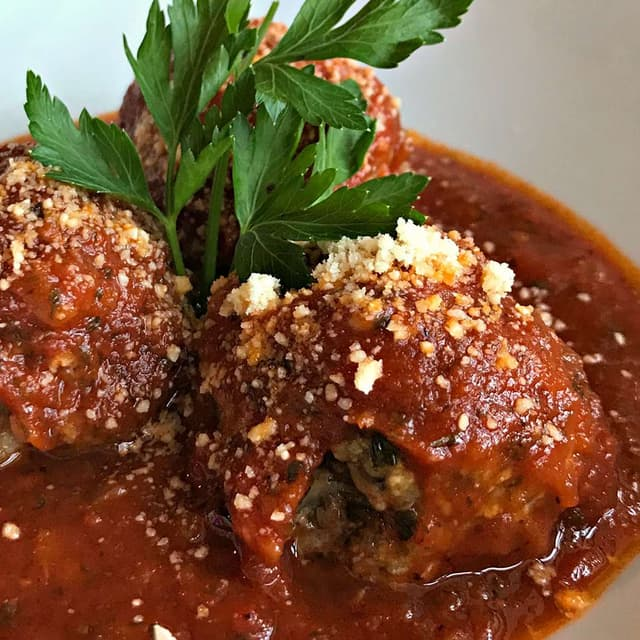

Italian Meatballs

Description
This Italian meatball recipe is very easy to make, and since we skip the messy step of pan-frying the meatballs, it becomes downright simple. Here I use a standard half-beef/half-pork mixture. Once the meatballs are baked, add them to your favorite prepared tomato sauce and simmer for 1 to 2 hours.
Ingredients
- ⅓ cup plain bread crumbs
- ½ cup milk
- 2 tablespoons olive oil
- 1 onion, diced
- 1 pound ground beef
- 1 pound ground pork
- 2 eggs
- 2 tablespoons grated Parmesan cheese
- ¼ bunch fresh parsley, chopped
- 3 cloves garlic, crushed
- 2 teaspoons salt
- 1 teaspoon ground black pepper
- 1 teaspoon dried Italian herb seasoning
- ½ teaspoon red pepper flakes
Steps
- Cover a baking sheet with foil and spray lightly with cooking spray. Soak bread crumbs in milk in a small bowl for 20 minutes.
- Meanwhile, heat olive oil in a skillet over medium heat. Add onion; cook and stir until onion has softened and turned translucent, about 5 minutes. Reduce heat to low and continue cooking and stirring until onion is very tender, about 15 minutes more.
- Gently stir beef and pork together in a large bowl. Add onions, bread crumb mixture, eggs, Parmesan cheese, parsley, garlic, salt, black pepper, Italian herb seasoning, and red pepper flakes; mix together using a rubber spatula until combined. Cover and refrigerate for about one hour.
- Preheat the oven to 425 degrees F (220 degrees C).
- Form mixture into balls about 1 1/2 inches in diameter; arrange in a single layer on the prepared baking sheet.
- Bake in the preheated oven until browned and cooked through, 15 to 20 minutes.
- Cover the baking dish with aluminum foil, making sure it doesn't touch the cheese. Place onto a baking sheet to catch any spills.
- Bake in the preheated oven for 30 minutes. Remove the foil and continue to bake until golden brown and bubbly, 30 to 35 more minutes. Let sit for 20 minutes before serving. Serve with tomato sauce over pasta.